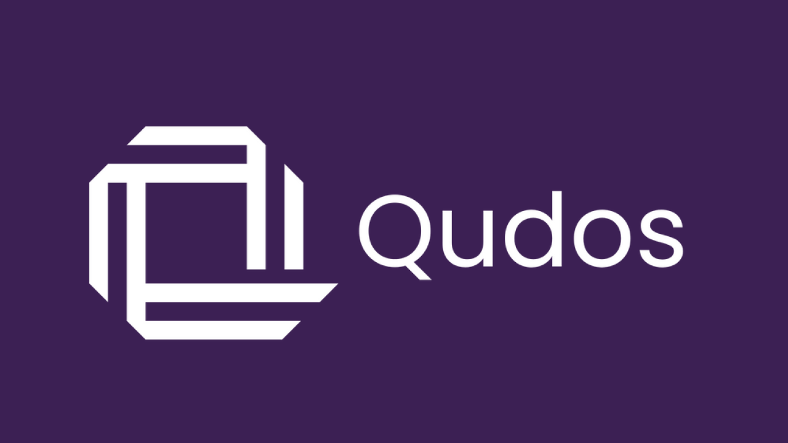

Qudos .NET Meetup Newcastle - May 2026

Building Developer Tools That Last - Payments, Cron, and, Open Service - Babatunde Esanju
Most people at the event are developers or engineers and when people are doing this, they are using tools and SDKs like Dapper and MediatR. Other people will have the same kind of pain points, when people had an issue before AI, they went to StackOverflow. Will be talking about PayBridge when dealing with multiple payment gateways to make this easier and CronCraft which was problem with needing a human readable Cron expression to make them easier to understand.
Why Most Developer Tools Fail
Over-engineering where have complex solutions for simple problems, Poor developer experience where there is a steep learning curve driving users away. Lack of focus where are trying to solve everything at once. Core principles for time less tools are to solve real pain points, prioritise developer experience and embrace simplicity - so need to build from frustration not from imagination and make it easier to use.
Real-World Examples
PayBridge is a unified payment gateway where they were trying to create an e-commerce solution so when one system is down you need to use another payment system if there is a problem, they have had to solve multiple times and have different requests and responses to work with so can just use this package.
Solving a Real Pain Point
PayBridge was to see what the problem is when dealing with multiple payment gateways with different APIs and have a solution that provides a single unified endpoint with consistent interface and error handling which is a wrapper for other payment gateways with built in transaction logs. With CronCraft the problem was cryptic cron expressions and where non-technical people don't understand with no localisation, so the solution is for human readable expressions with multi language and time zone awareness with no configuration required.
Developer Experience
where you can make it seem magical, with PayBridge is has automatic gateway detection, error handling and meaningful error messages and with CronCraft has an extension method syntax, single responsibility with predictable behaviour and clear error messages.
Create an Action Plan
Action Plan is to identify daily pain points, check if solutions exist and why if they do they fall short, build the tools you wish you existed, share early and gather feedback plus iterate based on real usage.
An Intro to Blazor - Alex Hedley
Blazor is a modern front-end web framework based on HTML, CSS and C# that helps you build web apps faster. With Blazor you can build reusable components that can be run from both the client and server to deliver web experiences. Initial release of Blazor was in 2017 when Steve Sanderson did a demo of this showing C# via WebAssembly at NDC Oslo then in 2018/2019 was put into .NET Core along with Blazor Server and updates to SignalR. In 2020 Blazor WebAssembly was released for a client-side .NET, with offline support, and improvements to speed and size of .NET to help with this. In 2022 support for Blazor Hybrid for WebView in .NET MAUI to reuse components in a .NET MAUI app without having to rebuild a control. In 2023 the full stack for Blazor for server and client combining server and WebAssembly with options for render modes. With .NET 9 in 2025 this unified Blazor with single model with static and interactive modes with 2026 building in more performance and resolving issues.
Learning
You can follow tutorials online about Blazor or can develop with examples in Visual Studio Code. You can create projects in Blazor using .NET with
dotnet new blazor and by default is a server and WebAssembly application using Bootstrap theme which you can then run with examples
build it for example data and a counter. You can have code and markup together or separate the code from the markup in Razor in .razor by creating
a code behind file with the same name with .cs. You can create a Blazor WebAssembly application using dotnet new blazorwasm. You can
also build different components that are reusable across the board in Blazor.
Libraries
FluentUI Blazor that leverage the Fluent Design System which has in-depth documentation with support for FluentIcons for Emoji and layouts along with example code. There is also an innovation lab for features such as Markdown section and other features, it also supports theming where can have accent colours.
Blazing Story, a clone of Storybook from TypeScript, is a front-end workshop for building UI components and pages in isolation so they can be seen and used where can see a component live, you can pull in Razor pages and Markdown files where it can convert these to webpages.
Blazor WebForms is a collection of Blazor components that are drop-in replacements for ASP.NET Web Forms and includes other shims and modules to support migration to Blazor from legacy code.
Blazored is now archived but supported a few different components such as a WYSIWYG editor with other features like LocalStorage, SessionStorage although archived it is still available to be forked for further use but is no longer in development.
Utility is something Alex have created which is a Utility Web App written in Blazor WebAssembly at alexhedley.com/Utility-Blazor with helper utilities such as splitting urls, and other things like JWT decoding and mentioned you can host Blazor WebAssembly on GitHub Pages.
Blashing is something they have been working on which is a port of Dashing / Smashing which is a Sinatra based framework for building dashboards so can create dashboards that look especially great on TVs, it is something they have been porting over to Blazor. There were widgets that were built for Dashing / Smashing such as service status but are working on these and have some issues open for this and may get GitHub Copilot to build this at github.com/AlexHedley/blashing.